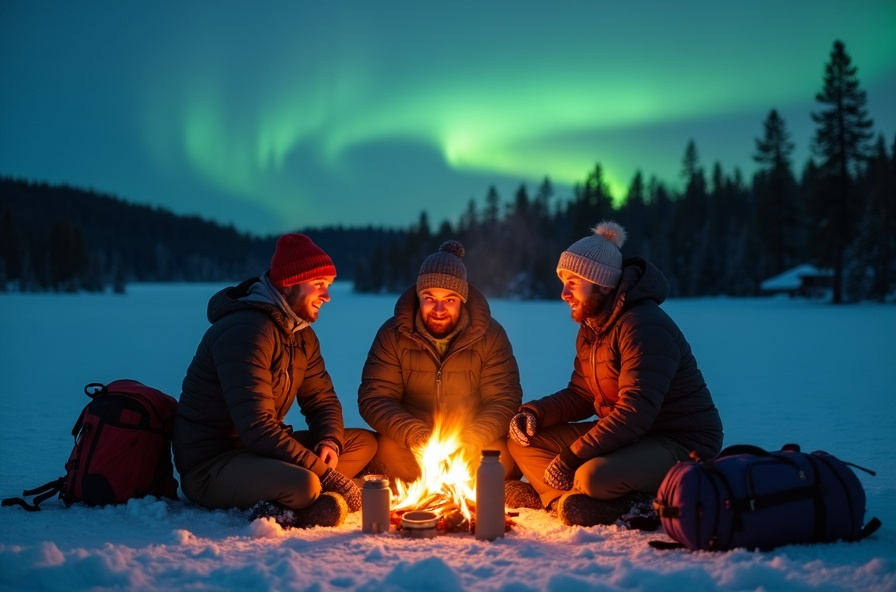
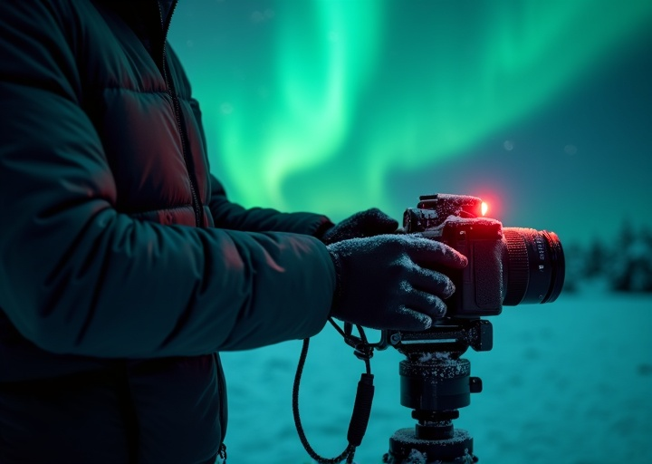
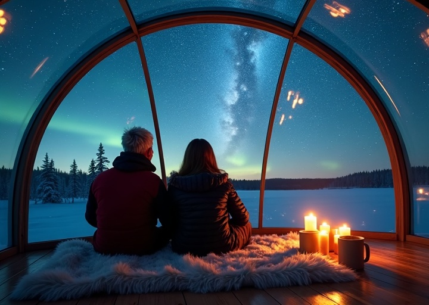
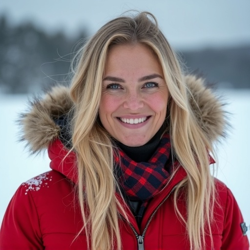

在地深耕
我們在冰島、芬蘭、挪威、瑞典都有長期合作的在地嚮導， 不是旅行社外包，而是真正的當地夥伴——他們知道哪條岔路能看到馴鹿， 哪座山丘的極光視角最美。
OUR STORY
從 2014 年第一趟冰島自駕開始，Aurora Travel 走過了十二個極夜、上百趟旅程，只為了把最純粹的極光感動帶給每一位旅人。
HOW IT BEGAN
2014 年冬天，創辦人 Alex 在冰島 Ring Road 上自駕時，第一次親眼見到極光。那不只是綠色的光—— 那是整個天空在呼吸、在律動，像是一場只為他一人上演的宇宙交響曲。
回到台灣後，他辭去科技業的工作，帶著一台相機和一張飛往特羅姆瑟的單程票， 開始了追光的人生。從一個人、一台車，到現在擁有跨國在地嚮導團隊、 專屬極光攝影師，和北歐四國的深度夥伴網絡。
我們不只是旅行社。我們是一群被極光收服的靈魂， 想把那份站在零下三十度雪地裡、抬頭看見整片天空都在跳舞的震撼， 原封不動地交到你手裡。
「極光從來不承諾出現，但我們承諾：只要有一絲機會， 我們就會帶你站在最對的位置等它。」



WHAT WE STAND FOR
我們在冰島、芬蘭、挪威、瑞典都有長期合作的在地嚮導， 不是旅行社外包，而是真正的當地夥伴——他們知道哪條岔路能看到馴鹿， 哪座山丘的極光視角最美。
我們堅持小團制（最多 12 人）、減少對極地生態的干擾， 優先選擇在地家族經營的旅宿。 每一趟旅程的碳足跡，我們都計算並進行碳補償。
北極圈自駕不是開玩笑的。 每趟行程標配雪地駕駛訓練合格的領隊、衛星電話， 以及完整緊急應變計畫。 零下四十度的夜晚，你只需要放心把自己交給我們。
我們懂你想拍下極光。 每團配備專業極光攝影師，從相機設定、構圖技巧到後製調色， 全程手把手教學。 就算只帶手機，我們也有轉接環和腳架借你。
MEET THE TEAM
從台北到特羅姆瑟、從雷克雅維克到羅瓦涅米， 我們的團隊橫跨四個時區，但共享同一份對極光的熱愛。
創辦人 & 極光領隊
前科技新創 CTO，2014 年在冰島被極光收服後轉行。 帶過 200+ 團極光行程，擅長運用 NOAA 數據精準預測極光爆發。

挪威在地嚮導總監
特羅姆瑟本地人，前極地研究員。 對北挪威的每一條峽灣、每一片雪原瞭若指掌， 還是個厲害的雪橇犬訓練師。
冰島首席攝影師
國家地理簽約攝影師，專攻極光與冰洞攝影。 他在冰島高地露營超過 500 個夜晚， 知道什麼角度能把冰與火之歌拍得最震撼。
台灣區客戶總監
從 Aurora Travel 第一位客人變成團隊核心。 負責行前準備、裝備建議與旅程中的客製化安排， 確保每位旅人從報名到回程都安心。